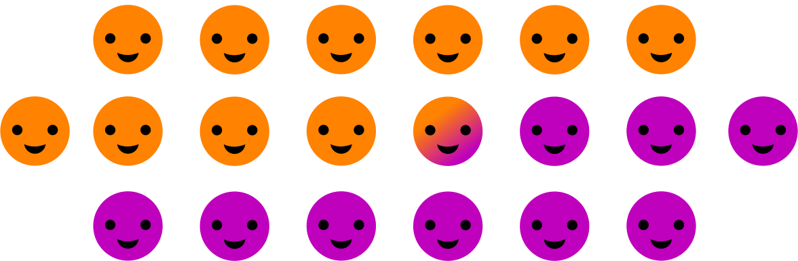
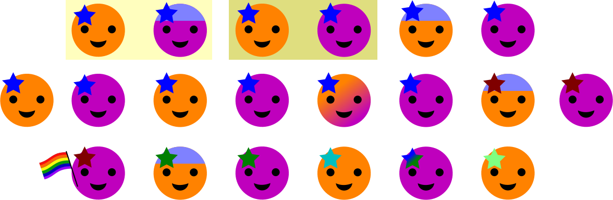
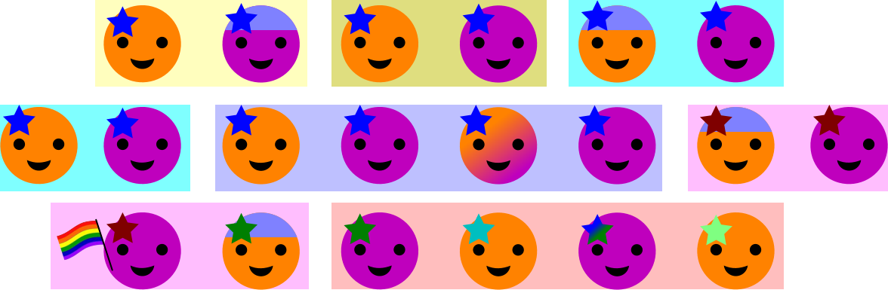
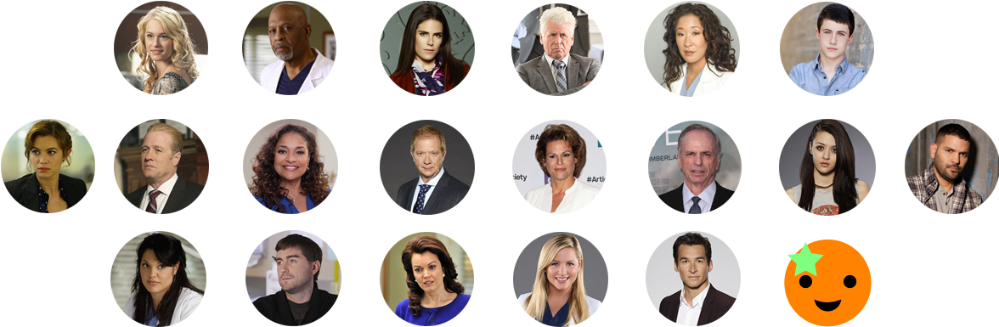
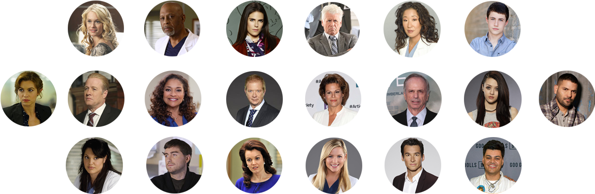
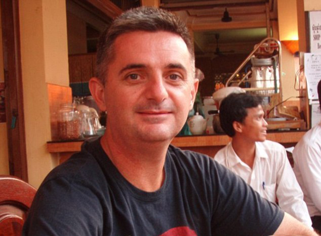
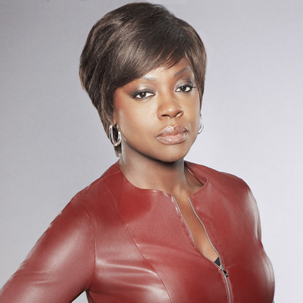
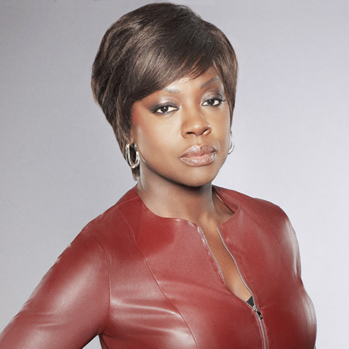
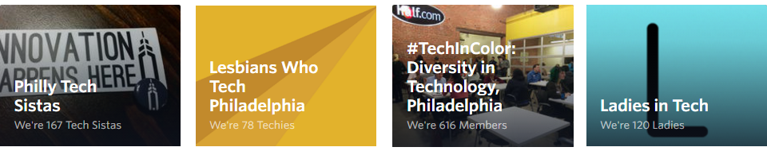

Diversity Works
slides.thetracyl.com/wcus2017
Shonda Rhimes is Titan
- Net Worth of over 120 million
- Golden Globe winner for Best TV Drama
- One of TIME magazine's 100 People Who Help Shape the World
- First woman to create three hit shows with more than 100 episodes each
- Founded the Rhimes Family Foundation
- Her reign of an entire night of network TV is "unmatched in TV history"
Diversity
I really hate the word 'diversity.'
I have a different word: normalizing. I am making TV look like the world looks. Women, people of color, LGBTQ people equal way more than 50 percent of the population. Which means it ain't out of the ordinary.
Tech Companies have a notorious normalizing problem
This may look familiar
Why should we care?
We make products for everyone
The US Population

Gender Orientation
51% Female, 49% Male, 0.3% Trans/Non-Binary
Census Bureaus March 2016 Current Population Survey / June–September 2012 Gallup poll
Race and Ethnicity
63.7% White

16.3% Hispanic or Latino

12.2% Black

4.7% Asian
1.9% Two or more races

0.9% Native American/Alaskan/Hawaiian & PI

Sexual Orientation
3.4% Identify as LGB

Ability
19% Report Having a Disability

Nearly 1 in 5 People Have a Disability in the U.S., Census Bureau Reports, July 2012
Age
10% age 19 to 25

Population Distribution by Age, Kaiser Family Foundation, 2014
12% age 26 to 34
Population Distribution by Age, Kaiser Family Foundation, 2014
13% age 35 to 44

Population Distribution by Age, Kaiser Family Foundation, 2014
14% age 45 to 54

Population Distribution by Age, Kaiser Family Foundation, 2014
14% age 55 to 64

Population Distribution by Age, Kaiser Family Foundation, 2014
15% age 65+
Population Distribution by Age, Kaiser Family Foundation, 2014
Our Users
A conservative estimate
Our Users
Shondaland edition
Our Users
Shondaland edition + Scott
Diversity is good for business
When selecting a problem-solving team...a team of randomly selected agents outperforms a team comprised of the best-performing agents.
Lu Hong and Scott E. Page "Groups of diverse problem solvers can outperform groups of high-ability problem solvers."
Michigan Business School and Complex Systems, University of Michigan; and Department of Finance, Loyola University, September 2004
Diversity is crucial to encouraging different perspectives and ideas that foster innovation.
"Global Diversity and Inclusion: Fostering Innovation Through a Diverse Workforce."
Forbes | Insights, July 2011
We’ve found that when at least one member of a team has traits in common with the end user, the entire team better understands that user.
Sylvia Ann Hewlett, Melinda Marshall, Laura Sherbin "How Diversity Can Drive Innovation"
Harvard Business Review, December 2013
Companies in the top quartile for gender or racial and ethnic diversity are more likely to have financial returns above their national industry medians.
Vivian Hunt, Dennis Layton and Sara Prince "Diversity Matters"
McKinsey Quarterly, February 2015
It's the right thing
How does this happen?
The Myth of Meritocracy
Myth:
The most qualified candidate gets the job.
Truth:
Some qualified people never make it to the first round because of unconscious bias.
Personal Stories
Carlos Zuniga

- Talented programmer
- Mad Sysadmin skills
- Fun to work with
Carlos Zuniga
After applying to positions I felt I was qualified for and receiving no responses, I reapplied a couple weeks later as 'Carl' instead of 'Carlos'.
Almost all of them called back asking for 'Carl.'
What's in a name?
Racial Bias in Hiring
A November 2002 study by the University of Chicago Graduate School of Business
Applicants with "white-sounding" names were 50 percent more likely to get called for an interview.
The most surprising and disheartening result is seeing that applicants with African-American names were not rewarded for having better resumes.
Marianne Bertrand "Racial Bias in Hiring."
University of Chicago Graduate School of Business, November 2002
Kim O'Grady
I made one change that day. I put Mr in front of my name on my CV. ...I got an interview for the very next job I applied for. And the one after that.
Kim O'Grady "How I Discovered Gender Discrimination."
Tumblr, July 2013
Science faculty’s subtle gender biases favor male students
A November 2012 study by Yale University
Faculty participants rated the male applicant as significantly more competent and hire-able than the (identical) female applicant.
Corinne A. Moss-Racusin, John F. Dovidio, Victoria L. Brescoll, Mark J. Graham, and Jo Handelsman "Science faculty’s subtle gender biases favor male students."
Yale University, November 2012
Courtney Wilburn

- Lead DevOps Engineer at Wirecutter
- 2015 & 2016 White House LGBTQ Tech & Innovation Fellow
- Talented programmer
- Public Speaker and Teacher
Courtney Wilburn
The phone and in-person interviews went incredibly well. A few days later, they called saying I was qualified and felt confident I had the ability to perform whatever was required of me, but they felt that I wasn’t a good 'culture fit.'
Courtney Wilburn
I'm incredibly easy-going, so I was mystified by what that meant until I took a second look at the company’s website. If I joined them as a developer, I'd be the only woman there outside of administration, and the only Black person.
"Culture Fit"
The biggest problem is that while we invoke cultural fit as a reason to hire someone, it is far more common to use it to not hire someone.
Katherine Klein "Is Cultural Fit a Qualification for Hiring or a Disguise for Bias?"
Wharton School of the University of Pennsylvania, July 2015
What do you want your company culture to be?

 


The only way that culture in the workplace is effective is if there are sets of values that help the company achieve its strategy.
Sigal Barsade "Is Cultural Fit a Qualification for Hiring or a Disguise for Bias?"
Wharton School of the University of Pennsylvania, July 2015
Mia Levesque
Your clients don't give a sh*t about your Beer Pong Fridays and foosball tables.
What do we do?
Listen
Think
WWSRD?
Shonda Rhimes...pointedly avoided specifying her characters’ ethnicities, going so far as to leave off last names to help ensure the casting process would be a truly open one.
Nina Shen Rastogi "The tricky business of writing casting notices."
Slate.com, July 2012
Examine your job listings
Highly masculine wording used in job postings reduces women’s appeal of the job because it signals that women do not fit or belong in that job.
Stephen Shearman "You Don’t Know It, But Women See Gender Bias in Your Job Postings"
ERE Media, March 2013
Evidence That Gendered Wording in Job Advertisements Exists and Sustains Gender Inequality
A March 2011 study University of Waterloo Department of Psychology
Words not to use
- Ninja
- Rockstar
- Hacker
- Cowboy
- Guys
- Superhero
- Jedi
- Guru
Erin Kissane "Job Listings That Don't Alienate"
"Masculine" themed words
- Ambitious
- Analytical
- Assertive
- Autonomous
- Best of the Best
- Boastful
- Chairman
- Competitive Salary
- Dominate
- Rigid
- Takes Risks
- Hierarchical
"Feminine" themed words
- Adaptable
- Choose
- Collaborate
- Creative
- Curious
- Flexible Schedule
- Multitasking
- Imaginative
- Intuitive
- Self-Aware
- Thoughtful
- Trustworthy
Understand
Diversity ≠ Low Quality
Homogeneity = Less Quality
Diversity ≠ Low Quality
Homogeneity = Less Quality
"Diversity Hire"
Realize diversity is an asset
Marc Coleman
Founder and president of The Tactile Group, LLC.
When we have to choose among equally qualified candidates, we choose the candidate that will best maintain our culture of diversity.
Right now, we could use the perspective of some cisgender straight white men.
Expand your network

Chris Lema
VP of Product at Liquid Web
Pro-actively surround yourself with people who are unlike you.
Choose it. Go out of your way to embrace the difference and learn from it.
Be part of the solution
Support organizations working to fix the problem

National organizations


Help all of your clients be successful
Witchsy

It would take me days to get a response, but Keith could not only get a response and a status update, but also be asked if he wanted anything else or if there was anything else that Keith needed help with.
John Paul Titlow "These Women Entrepreneurs Created A Fake Male Cofounder To Dodge Startup Sexism"
Fast Company, August 29, 2017
Use the power of your words
2016
- 115 WordCamps held in 41 different countries
- Over 31,00 attendees
- Numerous other non-official WordPress events
Avoid default pronouns
Programmer ≠ He
When referring to hypothetical people, use gender neutral pronouns or switch back and forth equally
Jason Cohen
Founder and CTO of WP Engine
The words we select directly influence our subconscious world-view, and decision-making.
It's our job as orators and leaders to use that influence for good.
Liam Dempsey
Director and Designer at lbdesign

Intermixing 'she', 'he' and 'they' in your talks deepens your connection with your audience.
Using a mix of these words encourages people to listen – because you're speaking to their experience, as they are.
Have a wide rage of people in your slides
Be successful
Let's fix this!
If people aren’t being included, then I’m going to find a way to make sure they’re included. I’m going to find a way to make sure they have opportunities.

Tracy Levesque
Co-owner, Co-founder YIKES, Inc.
@LilJimmi • yikesinc.com